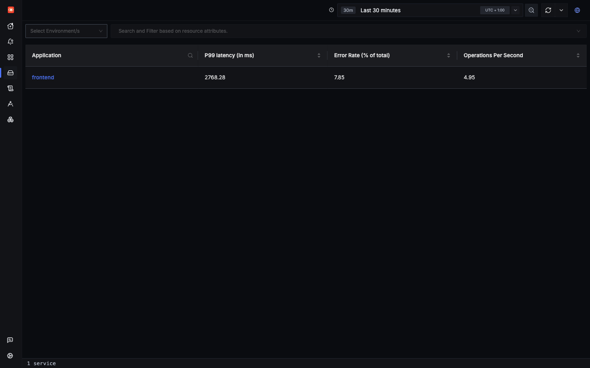
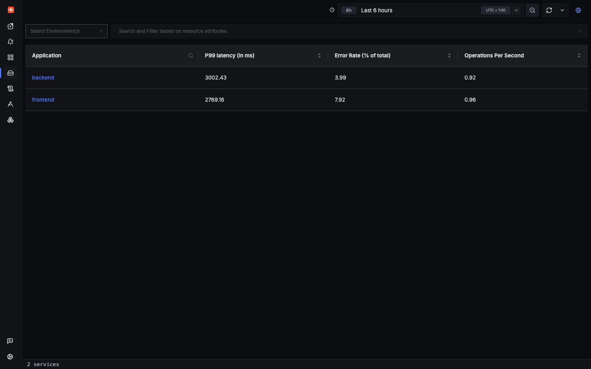
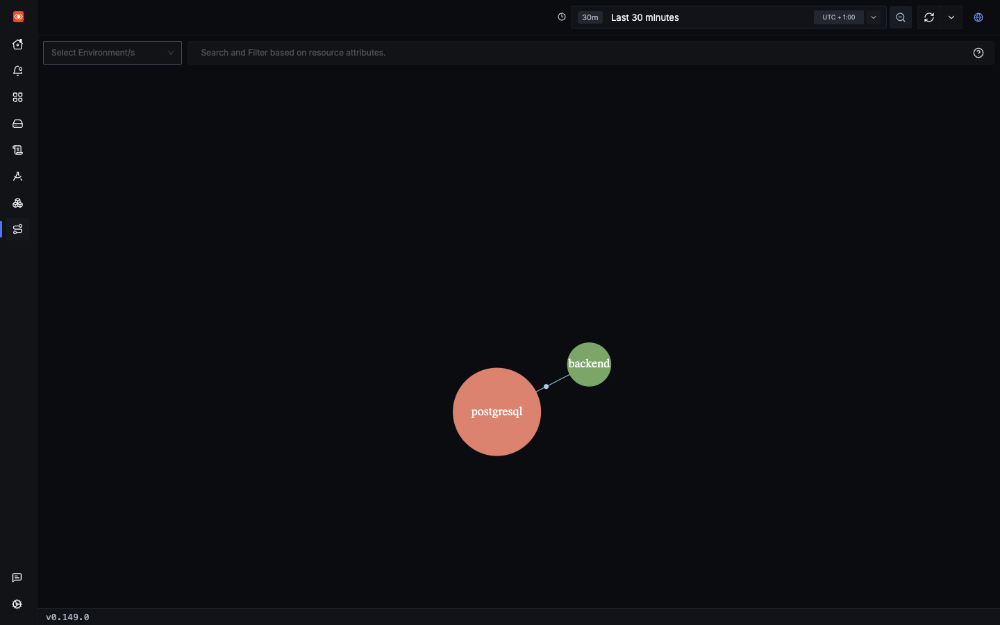
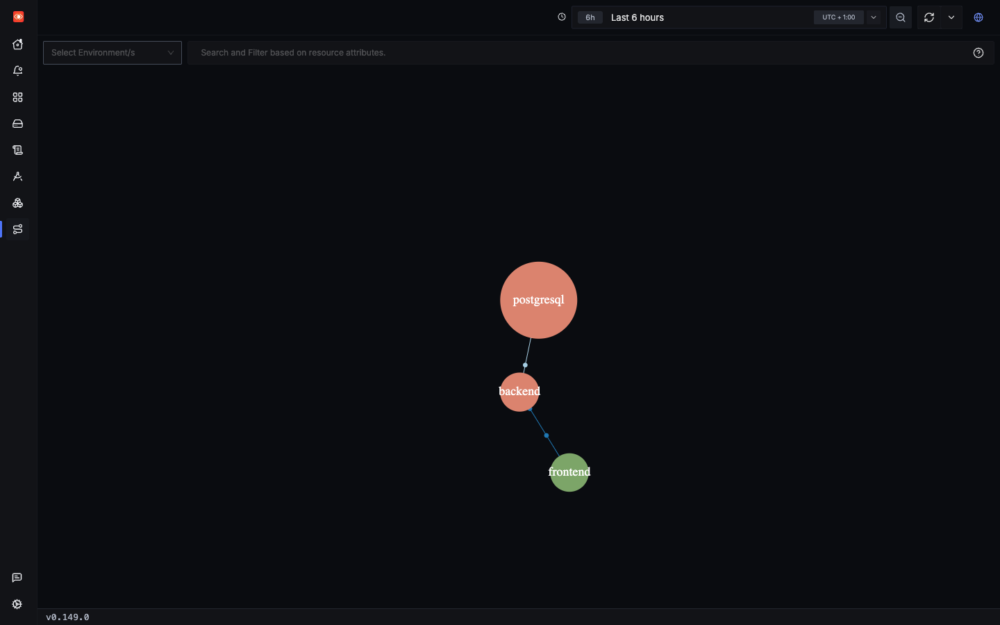
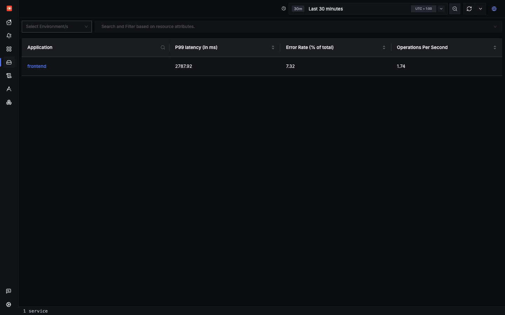
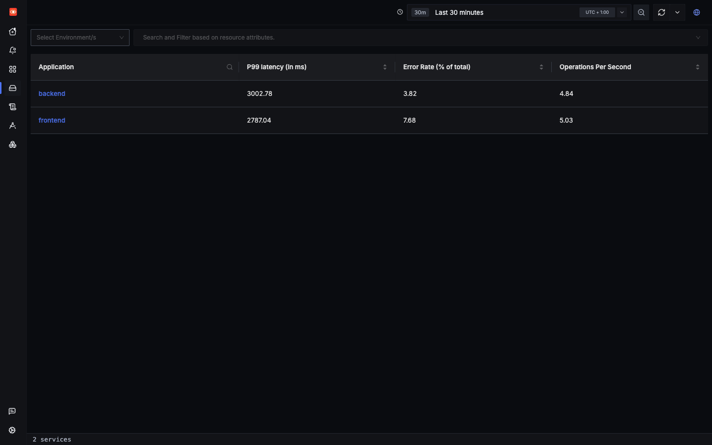
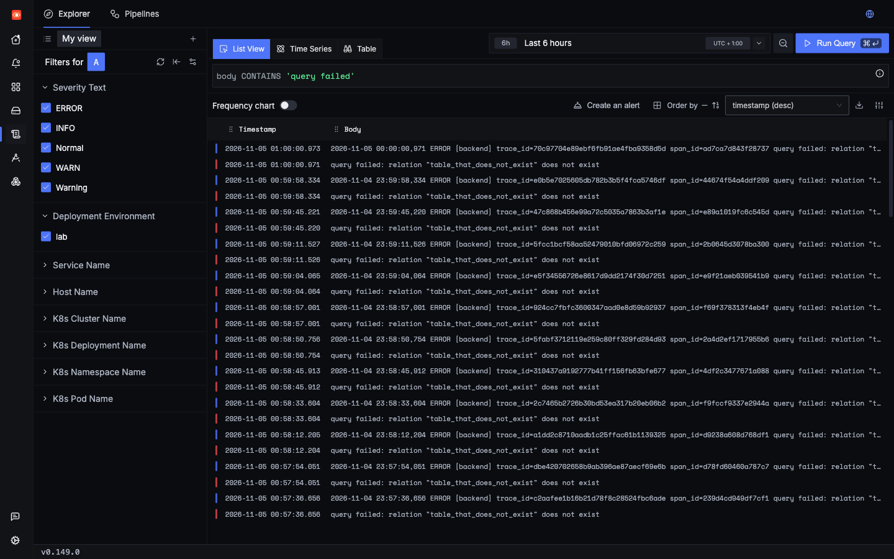
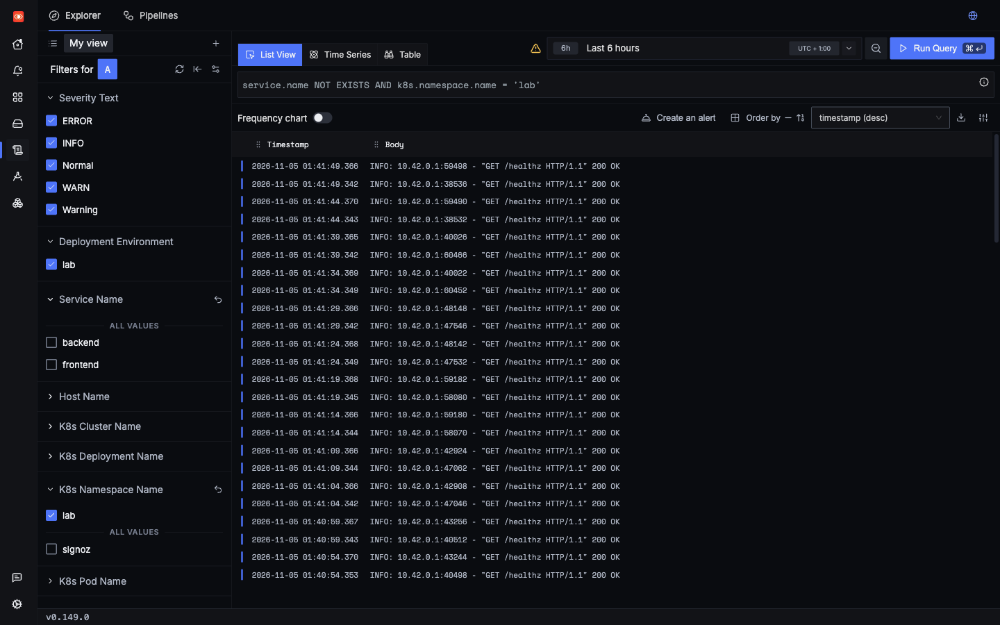

Reference
What is missing, and how to fix it
Plain OpenTelemetry plus a simple SigNoz install gives you a lot, as the incidents showed. It also leaves real gaps, and one of them can mislead you. Nothing on this page has been applied. Fixes marked Untested are proposals only.
The source for this page is docs/FINDINGS.md. Where testing for this tutorial found more, it says so.
Gap 1: a new install rejects telemetry until someone signs up
The collector pod shows Ready, but ports 4317 and 4318 stay closed until an organization exists. Apps get Connection refused, and their telemetry is lost. kubectl get pods will not warn you.
Do this: complete signup right after install, and include it in any automated setup.
Gap 2: backend can vanish from Services and the Service Map
Update, 2026-11-05: this gap is now mostly fixed in the lab by one env var. Everything in this section up to Fixes describes the default 5-second flush, so the live pages no longer behave the way these screenshots show.
docs/FINDINGS.md reports that backend is missing from Services, and that the frontend → backend link is missing from the Service Map. That was true when written, and it is still what you will usually see. Testing for this tutorial showed the picture is more subtle: the gap is intermittent, and it depends on your time range.
See it for yourself



backend → postgresql. Seen in SigNoz UI
The picture that docs/FINDINGS.md recorded looked just like the first one above:

docs/screenshots/01-services.png, taken before any matching rows existed. Seen in SigNoz UIFor a while, a 30-minute view did show both, as this shot from later the same evening shows:

Why it happens
Both pages depend on ClickHouse materialized views that join a parent span to its child: sub_root_operations and dependency_graph_minutes_service_calls_mv_v2. docs/FINDINGS.md showed that these views only match a parent and child that arrive in the same insert. Each service flushes on its own 5-second timer, so they usually land in different inserts, and the view writes nothing.
That explanation predicted "occasional matches" for busy services, and that is exactly what happened. Between 23:10:29 and 23:11:14 UTC on 2026-11-04, for about 45 seconds, some inserts matched. There was no config change and no restart. Why the timing lined up then is unknown.
Only 11 of 1,903 view runs wrote anything. Those few rows now decide what Services shows.
Update, 02:04 UTC on 2026-11-05: more matches appeared during later testing, the last at 01:55:32, making 19 of 1,931 runs. Each match moves a row's time forward, so the exact times in the table below no longer reproduce. The rule held when retested: a range starting at 01:50 listed backend, and one starting at 01:56 did not. The map count grew to 262 calls, against about 22,800 served.
The rule, as tested
A service is listed when it has a top_level_operations row with a time at or after the start of your range. The end of the range does not seem to matter. This is an inference from these API results, not from reading the source:
| Range (UTC) | Why this range | Listed on Services |
|---|---|---|
| 23:10:20 to 23:11:30 | Covers the rows | backend (392 calls), frontend |
| 23:11:10 to 23:20:00 | Starts just before the last row | backend (2,598 calls), frontend |
| 23:11:20 to 23:20:00 | Starts just after the last row | frontend only |
| 22:30:00 to 23:00:00 | Ends before any row existed | backend (7,896 calls), frontend |
The last row is the surprising one, because the past can change. At about 23:03 UTC, before any row existed, a 60-minute query covering most of this range returned only frontend. This range lists backend now, because rows were written later.
Two more results complete the picture. The call counts on Services are real, because they come from stored spans. The row only controls whether the service gets listed at all. The Service Map's counts are not reliable, because they come from the view itself: it shows 246 calls for frontend → backend, when the backend served over 13,000 in the same hour.
Working around it today
- Open
/services/backendby direct URL. Key Operations returned real data even in a range with no row API. The Entrypoint Spans toggle stays empty: its API returnednullin that range. - Use the Traces Explorer, which reads spans directly.
- Use the span-derived metric below for real call rates per service.
Fixes
Option 1, applied on 2026-11-05: flush spans more often, so that parents and children share an insert.
- { name: OTEL_PYTHON_FASTAPI_EXCLUDED_URLS, value: healthz }
+ - { name: OTEL_BSP_SCHEDULE_DELAY, value: "500" }Measured over 5 minutes at 5 requests/s with 10% errors:
| 5-second flush (default) | 500 ms flush | |
|---|---|---|
| View runs that wrote rows | 19 of 1,931 (1%) | 302 of 302 (100%) |
frontend → backend calls on the map, against real calls | 262 of about 22,800 (1%) | 1,207 of 1,415 (85%) |
backend listed in a last-60-seconds range | Rarely | 10 of 10 checks |
Map counts were still about 15% low, so treat them as approximate. That was a short test on one node with one collector.
Update, two nodes: backend stayed listed in every setup, but map accuracy changed: 84% through the agents with one collector, and 41% with spans split across two collectors, because a parent and child on different collectors can never share an insert. docs/FINDINGS.md has every run. The likely fix is a loadbalancing exporter keyed on trace ID Untested.
Option 2: add a groupbytrace processor in a collector ahead of SigNoz, so that a trace's spans are sent together. It is another option if you need accurate map counts. Untested
Option 3: report it to SigNoz with the reproduction in docs/FINDINGS.md and the time-range table above.
Gap 3: app telemetry has no Kubernetes context
Update, 2026-11-05: fixed in the lab. Apps now send through the agent, and all 5,767 spans in a test window had pod and node names that matched kubectl. The rest of this section shows the gap as it was.
You could not go from a slow trace to the pod that served it. The app sent straight to SigNoz's collector, which skips the agent that adds these attributes.
0 of 142,872 spans in the load run have a pod name. Point the app at the agent instead, which has k8sattributes on all three pipelines:
- - { name: OTEL_EXPORTER_OTLP_ENDPOINT, value: "http://signoz-otel-collector.signoz.svc.cluster.local:4318" }+ - { name: OTEL_EXPORTER_OTLP_ENDPOINT, value: "http://k8s-infra-otel-agent.signoz.svc.cluster.local:4318" }Gap 4: k8s-infra duplicates every app log
The app sends logs over OTLP, and k8s-infra also reads the same lines from stdout. Each copy has a different half of the information:
| OTLP copy | stdout copy | |
|---|---|---|
service.name | Yes | Blank |
| Kubernetes attributes | No | Yes |
| Severity | Yes | Blank |
| Link to trace | Yes | No, the ID is only text in the message |

trace_id= only as text.This is why log searches can return mixed results that filter differently: a search on severity_text finds only OTLP copies, and a search on Kubernetes attributes finds only stdout copies. Neither search finds both.
The stdout count is far higher than a simple duplicate would give, so testing for this tutorial sorted those lines by type:
- The twins match the OTLP count exactly, at 39,328 each. So every app log really is stored twice.
- Stack traces are the largest group. On the stdout path, each line of a traceback becomes its own log record, so one exception turns into dozens of unrelated rows. OTLP keeps a traceback together on a single record.
- The rest never go through OTLP at all: uvicorn's access log and the health probe lines. OTel excludes those probes from spans, but uvicorn still prints them.

Possible fix Untested: keep OTLP logs, route them through the agent (gap 3), and exclude the lab namespace from filelog collection. Alternatively, drop OTLP logs, print JSON to stdout, and parse it with a SigNoz log pipeline.
Gap 5: nothing is set up for you
A fresh install has 0 dashboards, 0 alert rules, 0 notification channels, 0 log pipelines and 0 saved views API. You should plan to:
- Import dashboards. SigNoz/dashboards has folders such as
apm/,k8s-infra-metrics/andpostgresql/. None were imported, so whether they suit this data is Untested. - Write alerts. That repo has no alert definitions. Good first rules from this tutorial: error rate from
signoz_calls_total, P99 latency, pod CPU, and a separate 4xx rule. - Add a notification channel, or alerts will have nowhere to go.
Gap 6: smaller issues
Span noise
56% of spans in the load run are zero-length ASGI http send and http receive spans. They crowd traces and inflate error counts.
exclude_spans exists in the installed version, confirmed by reading its signature in the running pod, and accepts send and receive. Using it here is still untested:
-FastAPIInstrumentor.instrument_app(app)+FastAPIInstrumentor.instrument_app(app, exclude_spans=["send", "receive"])Until then, filter them out in searches:
Other things to know
- Vague span names. Client spans are named just
GETorPOST, and every scenario shares one operation. That is whylab.scenarioexists. - 4xx is not an error.
bad_inputhas span status Unset, so it does not affect the error rate. See the error incident. - SDK exporter logs ship as app logs. The exporter's own failures reached SigNoz as
WARNandERRORlogs, through the root logger. - Older attribute names. The instrumentation emits
http.server.duration,db.statementandnet.peer.name. For example,http.server.durationhashttp.target, nothttp.route. Check this when importing dashboards. - Silent misconfiguration. A k8s-infra endpoint without
http://installs fine, and pods stay Running while every export fails. Check collector logs, not pod status. - Outbound call. The self-hosted UI requests release notes from
cms.signoz.cloud.
What this tutorial could not verify
- Infra Monitoring, Kubernetes tab. It opened, but its data did not finish loading. The Hosts tab was confirmed. See the CPU incident.
- Queries marked Query API only. The browser timed out, or was not tried. They ran through the same endpoint the UI calls.
- How often gap 2 hits real deployments. Unknown. This is one small lab, with 45 seconds of matches.
- All proposed fixes. None have been tried.
Check yourself: Services lists backend in one time range and not in another, with no config change. Why?
Check yourself: The map shows 246 calls for frontend to backend. Should you trust that count?